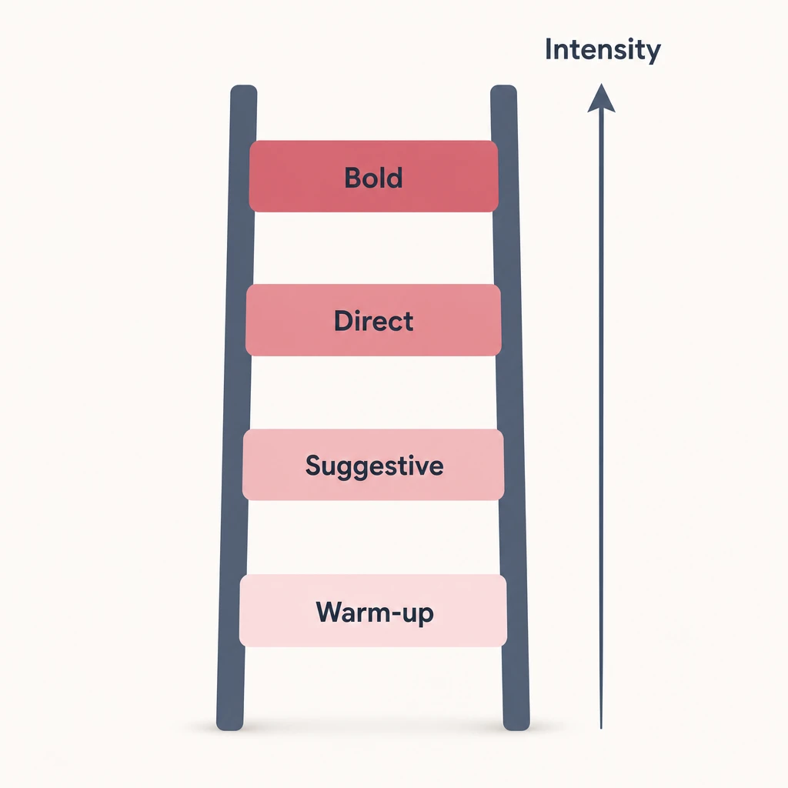
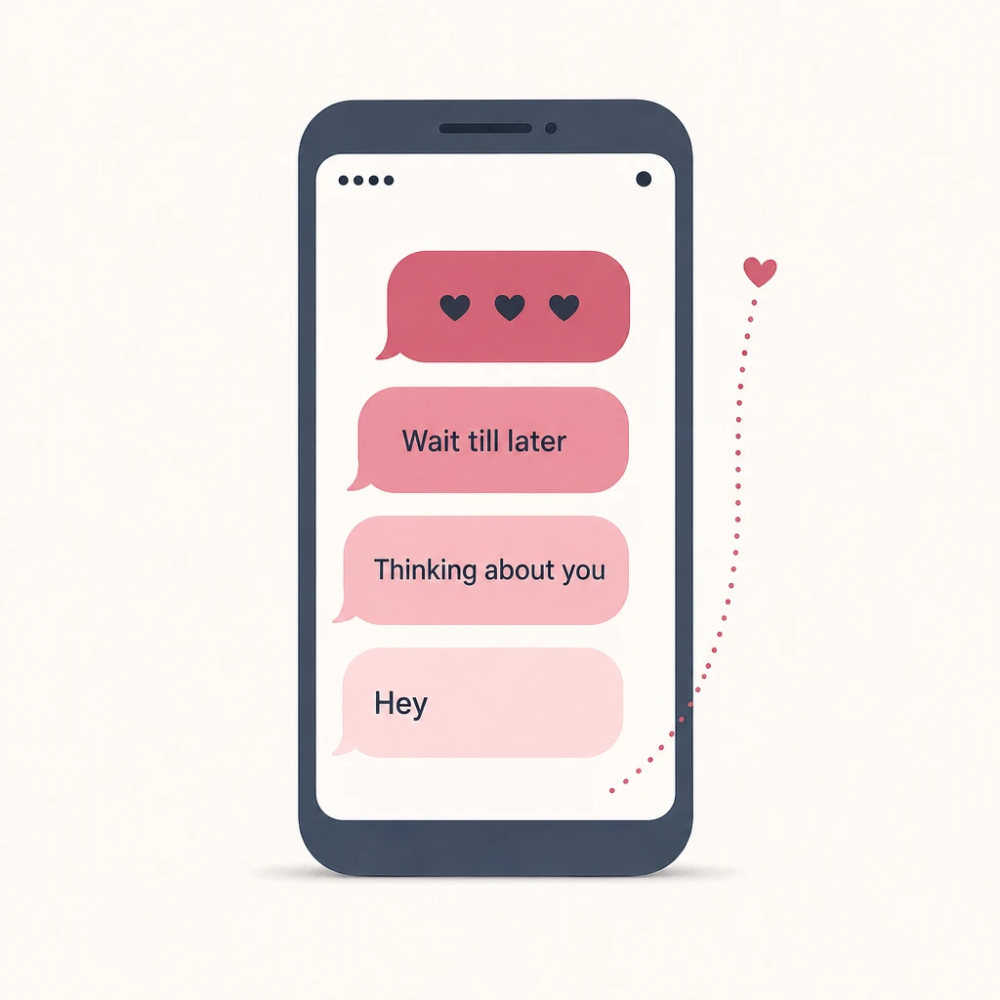

How to Talk Dirty: A Confident Beginner's Guide (18+)
Most people freeze the first time they try dirty talk. Not because they're bad at it, but because every guide online hands you 85 phrases and zero nerve to actually say them out loud.
This guide fixes that. Dirty talk is a skill you learn, not a talent you're born with. Like any skill, you start small and build up. You don't need a script. You need a starting rung and permission to be a little awkward at first.
Here's what you'll get: what dirty talk actually is, why it works (with real research, not vibes), how to start when you're nervous, exact things to say in person and over text, and what to do when a line lands wrong.
One ground rule. Everything here assumes two consenting adults. Keep it that way.

What dirty talk actually is (and why it's normal to want it)
Dirty talk is using words to build arousal before, during, or instead of sex. That's the whole definition. It can be a whispered compliment, a play-by-play of what you want, a command, or a fantasy you describe out loud.
It comes in every form. Spoken across the pillow, said on a call, or typed in a text. One reference work defines erotic talk as using explicit word imagery to heighten sexual excitement before and during, or instead of, physical sexual activity. It's a useful reminder that the words can be the main event, not just a warm-up.
Wanting it is common. In a survey of more than 4,000 adults, 91% said they had fantasized about a partner talking dirty to them, making it one of the most frequently wanted elements in people's sex lives. If you've been quietly curious about it, you're in good company, and you're not strange for it.
The key word is spectrum. Dirty talk runs from sweet ("you feel amazing") to explicit, and you get to pick where you sit. Nobody is grading you. So if it's this common, why does it work so well? The answer lives in your head, not just your body.
Why it works: the psychology of talking dirty
Dirty talk works because so much of arousal is mental. Sex educators have a saying for it: the brain is the biggest sex organ. The right words turn the temperature up faster than touch alone because they go straight to the part of you that does the wanting.
Two things happen at once. First, words feed anticipation. You describe what's coming and your partner's imagination runs with it. Second, you're giving directions. "Right there" and "slower" are dirty talk and instructions at the same time — which is part of why it feels so good.
There's research behind this. A meta-analysis of 48 studies found that couples who communicate openly about sex report higher sexual and relationship satisfaction than couples who stay quiet. Dirty talk is one easy on-ramp to that conversation. You're naming a desire instead of hoping your partner guesses it.
It isn't only a heat-of-the-moment tool, either. The affectionate talk that happens after sex, sometimes called pillow talk, is tied to greater closeness and relationship satisfaction. Verbal intimacy is a spectrum too, and dirty talk sits on the same line as "that was incredible, come here." Knowing why it works is nice. Opening your mouth is the hard part. So start small.
How to start when you're nervous (the mild-to-bold ladder)
Don't cannonball. Dip a toe. The fastest way to kill your nerve is to open with your most explicit line and watch it land flat — so start with a compliment and climb one rung at a time.
Think of four rungs. Warm-up is compliments: "you look incredible right now." Suggestive builds anticipation: "I haven't stopped thinking about last night." Direct is in-the-moment narration: "don't stop." Bold is explicit, and you only go there if you both want it.
Read your partner's reactions and let them set the pace. A grin and a lean-in means climb. A pause means hold.
Get a green light first. A quick, low-stakes question outside the bedroom — "is dirty talk something you'd be into?" — removes most of the fear before you ever say a word. Consent isn't a mood-killer. It's the thing that lets you relax enough to be playful.
Here's the confidence trick: rehearse where the stakes are low. Texting is easier than speaking because you get time to think. Saying a line to yourself in the shower counts too.
So does practicing privately with an AI companion you build yourself. It's a judgment-free way to find your words and get over the cringe before it's live with a real partner. If that's the door you want, our guide to unfiltered adult AI chat covers where to start.
Once you've got the nerve, you need actual words. Here they are.
What to say: dirty talk examples by intensity
Pick a line one rung above where you're comfortable, not five. Below are examples from warm-up to bold. Use them as a starting point, then swap in your own words. The goal isn't to recite a porn script. It's to say what you actually feel and want.
There's a formula under every example, and it's worth more than any list: describe what you feel, narrate what's happening, or ask for what you want. Master those three moves and you can generate infinite lines instead of memorizing a script. Put your partner's name in. Mean it. A line you believe beats a "perfect" line you're performing.
Warm-up (compliments)
Low risk, high reward. These work in a text, across a dinner table, or in bed.
- "I can't stop looking at you right now."
- "Do you have any idea what that smile does to me?"
- "Being this close to you is driving me a little crazy."
- "I've wanted to do this all night."
Suggestive (anticipation)
Hint at what's coming. Anticipation does half the work for you.
- "I've been thinking about you all day. Not the polite kind of thinking."
- "Wait until I get you home."
- "Tell me what you want me to do to you."
- "I keep replaying last time in my head."
In the moment (directives and feedback)
Short, honest, present-tense. This is where dirty talk doubles as instructions.
- "Right there. Don't stop."
- "You feel incredible."
- "I love hearing you."
- "Tell me you want this."
Bold (explicit — only if you both want it)
This rung is real explicit language, the kind you'd never say at dinner. Go here only when you've both clearly signaled you want to, and keep reading your partner as you do. The exact words are yours to choose. The rule is that they describe a shared want, not a performance. If you're unsure whether a line is too much, that uncertainty is a sign to check in, not to push.
| Rung | What it does | Example line |
|---|---|---|
| Warm-up | A compliment that raises the temperature without any risk | "I can't stop looking at you right now." |
| Suggestive | Builds anticipation by hinting at what's coming | "I keep replaying last time in my head." |
| Direct | In-the-moment narration that doubles as instruction | "Right there. Don't stop." |
| Bold | Explicit language, only when you've both signaled you want it | Your words — a shared want, not a performance |
Dirty talk over text (sexting, the easy on-ramp)
Texting is the lowest-pressure way to practice dirty talk. You get time to think, anticipation builds on its own, and nobody's watching your face while you find the words. If speaking feels impossible, start here.

Build a slow burn. A teasing hint beats a cold explicit opener every time. "Thinking about you" lands; a wall of graphic text out of nowhere usually doesn't.
The rhythm looks like this. Open light: "I can't focus today, and it's your fault." Wait for a reply, then warm it up: "Last night is all I keep thinking about." If they match your energy, climb a rung: "Tell me what you'd do if you were here right now." Each message gives them an easy opening to escalate with you, or to steer. That's the same one-rung-at-a-time rule as in person, just with the safety net of a screen between you.
Consent still applies online. Ask before you send anything explicit, read the room, and never assume a "yes" carries over from last week. The same tools people use for solo or AI practice apply here too — our roundup of AI sexting apps shows how this plays out without a partner on the other end.
One more thing: be sensible about privacy. There are no guarantees online, so don't send anything you'd hate to see resurface, and keep it between consenting adults. Whether you're texting or talking, sooner or later a line will land wrong. That's normal. Here's the recovery.
When it goes wrong: recovering from an awkward moment
A line that flops isn't a failure. The recovery matters more than the slip. Laugh, check in, adjust, and keep going. Nobody gets every line right, and the people who are good at this are just comfortable being a little awkward.
Most misfires come from three places. You copied a porn script and it landed fake. You went too explicit too fast. Or you used a word your partner doesn't like. None of these is a disaster. They're just feedback.
The fix is light. Humor beats shame every time — "okay, that one sounded better in my head" resets the room instantly. A quick "too much?" gives your partner an easy way to steer you. And if your comfort levels don't match, that's a conversation, not a verdict. Dial back a rung and try again later.
A real line, though: skip degrading language or humiliation unless you've explicitly talked about it first and both want it. And if your partner signals they're not into dirty talk at all, drop it without sulking.
Get this part right and dirty talk stops being a performance you can fail. It becomes a conversation you both enjoy.
| Common misfire | Why it lands wrong | The fix |
|---|---|---|
| Reciting a porn script | It sounds performed, not personal | Swap in your own words — say what you actually feel and want |
| Going too explicit too fast | You skipped past your partner's comfort | Dial back a rung, rebuild with a compliment, and climb slower |
| Using a word your partner dislikes | A single term can break the mood | "Too much?" — let them steer, then drop or replace the word |
The bottom line
Dirty talk is a skill, not a talent. Climb the ladder one rung at a time, start mild, lean on text to practice, and treat the awkward moments as part of learning instead of proof you can't do it.
So pick one rung above your comfort and try a single line this week. Compliment your partner with a little more heat than usual. Send the teasing text.
If saying it out loud still feels like a leap, rehearse privately first, then bring it to the person you actually want to say it to. You'll be surprised how fast the nerve catches up to the want.